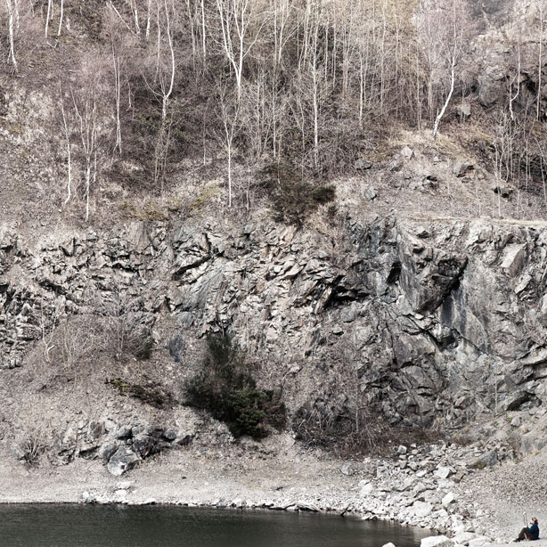

We know that in weather forecasting terms Sunday is a lifetime away but at present it’s due to be fine. SO, why not consider making a day of it before heading down to Callow End Village Hall at 5pm?
This is what we’d get up to if we weren’t setting up for If Wet:
Head over to Gullet Quarry in the morning. A beautiful, peaceful space and sonically very interesting too. That’s why we recorded this in there.

Head south along The Malverns to Chase End Hill. This way the hills are more rolling and the countryside richer. Plus you’ll bump into fewer people. If you choose to head north instead, St Ann’s Well Café is a delight to behold.
Double-back (there are one or two alternative routes for the way back) and head down via Gullet Quarry again. With a bit of luck the little café (Ruffz) on the road down from the quarry will be open for some tea & cakes.
Head over to the lovely village of Upton-upon-Severn for a look around and some riverside refreshments. Then on to Callow End for a meal at either The Old Bush or The Blue Bell (both at 10% off for advance If Wet ticket holders – just show your ticket in advance of ordering).
Once you are satiated, pop up the Old Hills to walk it off, finishing at Callow End Village Hall for If Wet – doors at 5pm.
[If you can handle any more afterwards, there is a pub quiz at The Blue Bell or more refreshments at The Old Bush, or Callow End Social Club if it’s open]